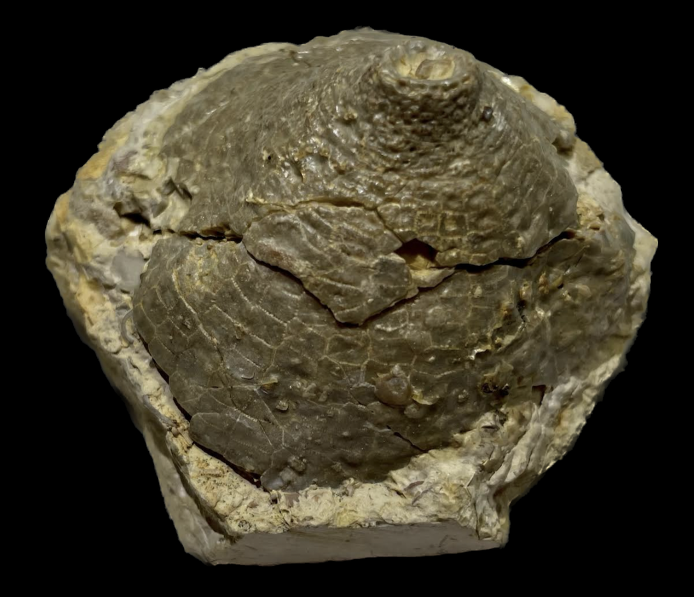
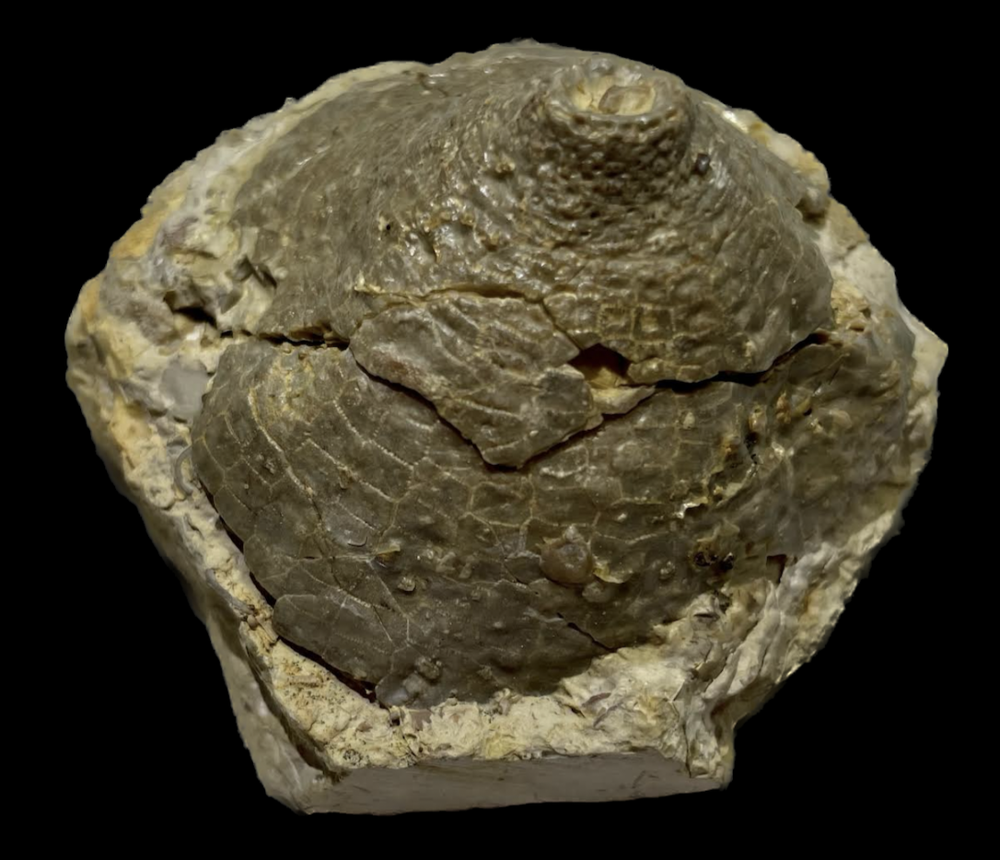

Cleiocrinus bromidensis
Ordovician
Bromide Formation - Pooleville Member
Geological Enterprises Quarry, Criner Hills, Carter County, Oklahoma, USA
Size: 6 cm across
The Bromide Formation of Oklahoma bears the second-most diverse Ordovician echinoderm fauna in the world, right behind the Bobcaygeon Formation in Canada. Incidentally, the Bromide and Bobcaygeon are all but sisters, as many genera occur in both localities, though there are differences at the species-level and in relative abundances. This Cleiocrinus bromidensis, much like Cleiocrinus regius and Cleiocrinus lepidotus of the Bobcaygeon, shows all the peculiarities of the genus and is also practically never found with the tegmen attached. The preservation on this specimen is about as good as it seems to get for the Bromide, which is typically a bit worse-preserved than the Bobcaygeon (but still excellent nonetheless by echinoderm standards).
 
